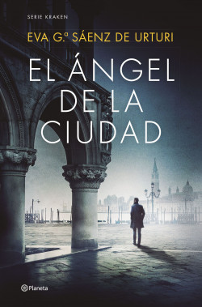
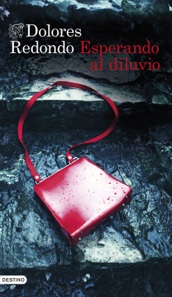

Libros que triunfan el día del libro 2023:
1. 'Donde todo brilla', de Alice Kellen
Donde todo brilla es lo nuevo de Alice Kellen, una autora que ha enamorado a más de dos millones de
lectores con sus historias inolvidables como El mapa de los anhelos, Nosotros en la luna, La teoría de
los archipiélagos y tantas novelas más. Esta vez, la autora de los sentimientos nos presenta una
conmovedora historia sobre
la amistad, el amor y la búsqueda de la felicidad.
La historia nos lleva por un camino lleno de secretos, dudas y amores, donde los personajes tendrán que
enfrentar sus miedos y descubrir quiénes son en realidad.
Alice Kellen nos lleva a un viaje emocional
con una prosa clara y evocadora, que nos hace reflexionar sobre lo que realmente importa en la vida.
Si en 2022 El mapa de los anhelos fue uno de los libros más escogidos por los lectores para celebrar el
Día del Libro, estamos seguros de que Donde todo brilla
ocupará muchas primeras posiciones en la
lista de deseos de este 23 de abril.

2. 'El Ángel de la Ciudad', de Eva García Sáenz de Urturi
¡El inspector Kraken está de vuelta! Ha llegado el momento de reencontrarnos con este apasionante personaje
en El Ángel de la Ciudad, lo nuevo de la ganadora del
Premio Planeta 2020 Eva García Sáenz de Urturi.
Todo lector que haya quedado rendido previamente a los pies de este fenómeno de ventas y literario que es la
serie
Kraken, seguro que está apuntando ya este libro como prioridad para este Día del Libro 2023.
La novela se puede leer independientemente de la Trilogía de la Ciudad Blanca, pero sigue ampliando el
universo de misterio fascinante que ha creado en esta serie.
En El Ángel de la Ciudad, nuestro inspector
se va de Vitoria a Venecia, donde se enfrentará a un caso que involucra a un asesino en serie que parece
estar recreando
los famosos cuadros del pintor Canaletto.
Sí, lo has acertado: este libro promete convertirse en la novela del año, y no es para menos: Eva García
Sáenz de Urturi sabe cómo mantenernos en vilo con su prosa
ágil y su habilidad para crear personajes y
tramas inolvidables.
Si eres fan de la serie Kraken y de la autora, no puedes perderte este libro. Y si aún no has leído ninguna
de las novelas de Eva García Sáenz, te recomendamos que
comiences por El silencio de la ciudad blanca y
te sumerjas en el apasionante mundo de Kraken. ¡Y no te olvides de El libro negro de las horas, la novela
anterior a
El Ángel de la Ciudad!

3. 'Esperando al diluvio', de Dolores Redondo
No cabe duda de que Dolores Redondo sigue siendo una de las mejores escritoras de thriller de la
actualidad, y Esperando al diluvio es una nueva prueba de ello.
En su nuevo libro deja el famoso universo del Baztán y de Amaia Salazar para entrar en otra historia
igualmente asombrosa llena de crímenes y suspense. En
Esperando al diluvio, un policía escocés deberá
investigar las atrocidades comentidas por John Biblia, un asesino en serie de mujeres del cual se ha
perdido el rastro.
Fue uno de los grandes éxitos del 2022 y el regalo estrella de las Navidades. Ahora, se postula para
repetir en el podio de libros que triufarán este Día del Libro. Y
si todavía te queda alguna duda
para regalar(te) esta novela el 23 de abril, todas se disiparán al decirte que la trama se
entremezcla con hechos reales ocurridos en el
territorio español. Porque nuestra escritora de
tormentas favorita nos traslada en esta ocasión al año 1983, cuando Bilbao fue arrasado por un
catastrófico diluvio.